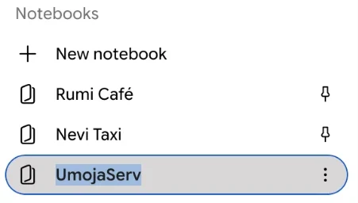
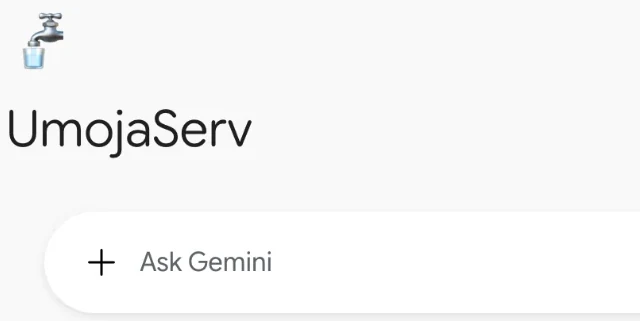

See how customers find you on Google, and what they say once they have.
Getting onto Google Maps is the start, not the finish. We set up and tune your Google Business Profile, then build a Gemini workspace from your approved business information, reviews and performance data. It shows you how people find you, what they say about you, and what to fix next.
Request a Google + AI ConsultationOne system, working together.
- Your Website
- Google Business Profile
- Google Search + Maps
- Gemini Business Workspace
- Reviews + Performance + Customer Insights
- Business Improvements
What UmojaServ sets up.
We go through every part of your Google presence, not just the fields that are quick to fill in.
- Google Business Profile review and optimisation
- Website and GBP alignment
- Business categories and services review
- Business description review
- Website and action links
- Customer review analysis
- Google performance baseline
- Gemini-assisted business workspace setup
- Business-specific Gemini instructions
- 30/60/90-day measurement framework
- Recommendations based on available business data
What you'll actually learn.
-
— 01
How customers discover you
See the searches, paths and touchpoints that lead customers to your Google Business Profile and website.
-
— 02
What customers actually think
Understand what your reviews are really saying — recurring praise, common concerns, and requests customers mention most.
-
— 03
What's working
See which parts of your Google presence and website are contributing to visibility and customer interest.
-
— 04
What needs attention
Spot gaps in your profile, website, or customer experience that may be holding your business back.
-
— 05
How performance changes over 30/60/90 days
Track movement in your Google Business Profile and website activity against a clear baseline, measured over time.
AI recommends. You stay in control.
UmojaServ uses Gemini to help analyse business information and identify opportunities — not to blindly run your business. Important customer-facing changes, pricing, business hours, services and responses should remain under human review.
We're testing this on ourselves first.
We're running this on UmojaServ's own profile and a few client businesses. We record a baseline first, and we don't publish results until we've measured them.


Questions about Google + AI setup.
What is Google Business Profile + AI setup?
It's a service where UmojaServ reviews and optimises your Google Business Profile, aligns it with your website, and connects it to a Gemini-assisted business workspace that helps you understand your reviews, visibility, and performance over time.
Do I need to already have a Google Business Profile?
No. If you don't have one yet, UmojaServ can help you create and verify it. If you already have one, we review and optimise what's already there.
Will AI respond to customer reviews or messages automatically?
No. Gemini is used to analyse information and suggest recommendations — it does not automatically post reviews, change your hours or pricing, or respond to customers on your behalf. Those decisions stay with you.
How is this different from just appearing on Google Maps?
Appearing on Maps is the starting point. This service connects your profile, website, and a Gemini business workspace so you can understand how customers find you, what they're saying, and where to improve — not just that you're listed.
What is the 30/60/90-day measurement framework?
It's a structured way of tracking your Google Business Profile and website performance against a baseline established at setup, so changes over the first 30, 60, and 90 days can be measured rather than guessed at.
Will this guarantee more reviews, bookings, or higher rankings?
No. UmojaServ does not promise specific results. We establish a performance baseline and measure real changes over time rather than making guarantees upfront.
Is this part of every UmojaServ website, or a separate service?
Every UmojaServ Website Foundation includes Google Business Profile alignment, keeping your website and profile consistent. This service goes further: full profile optimisation, plus Gemini-assisted analysis and ongoing measurement.
Who owns the data and Gemini workspace?
Your Google Business Profile is yours and stays in your own Google account. The Gemini workspace is UmojaServ’s: we keep one notebook per client business there to monitor your profile, using only the business information you approve plus your profile’s reviews and performance data.
Included foundation, advanced service.
- Google Business Profile alignment, keeping your website and existing profile consistent, is included with every UmojaServ Website Foundation. Creating or fully optimising a profile is quoted separately.
- Gemini-assisted analysis, performance baselines, detailed review analysis, and 30/60/90-day measurement are available as an advanced service — request a Google + AI consultation for details.
Ready to get your business set up?
Message us on WhatsApp — we'll walk you through what your Google Business Profile and Gemini workspace need.
Request a Google + AI Consultation